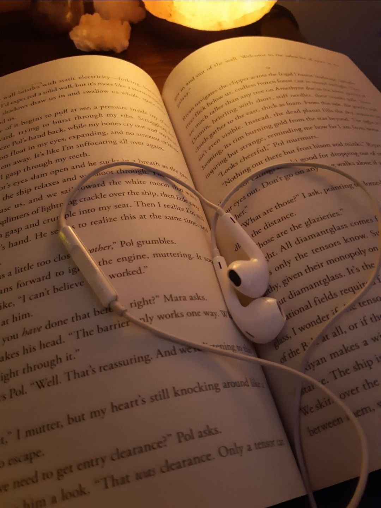
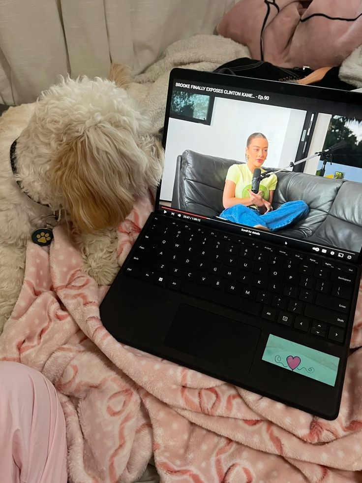
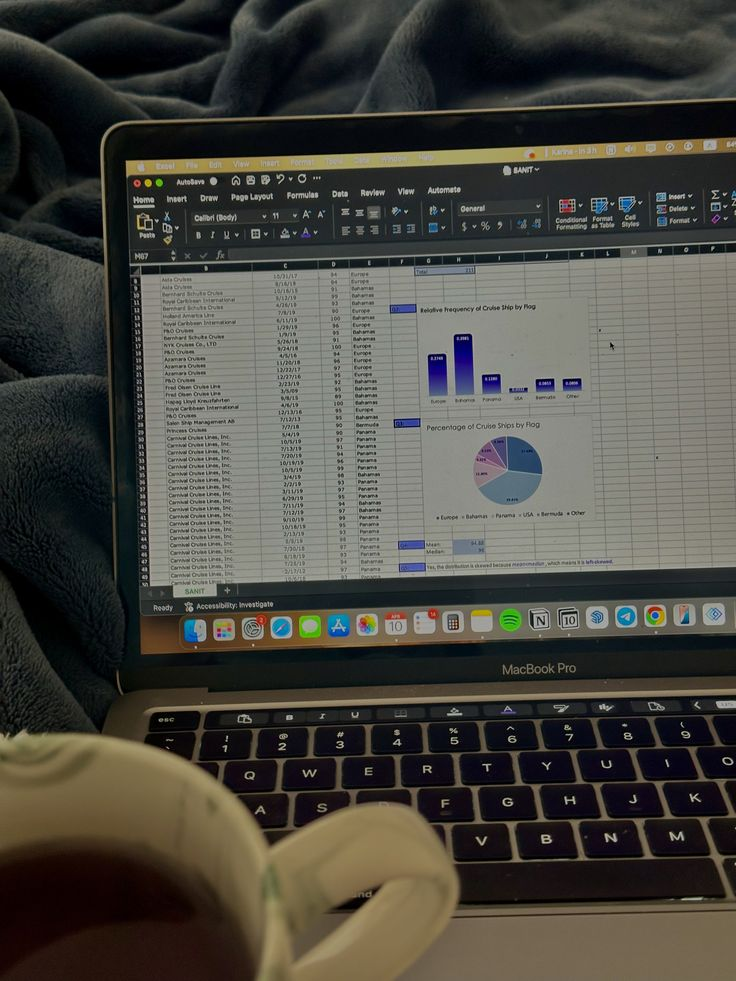
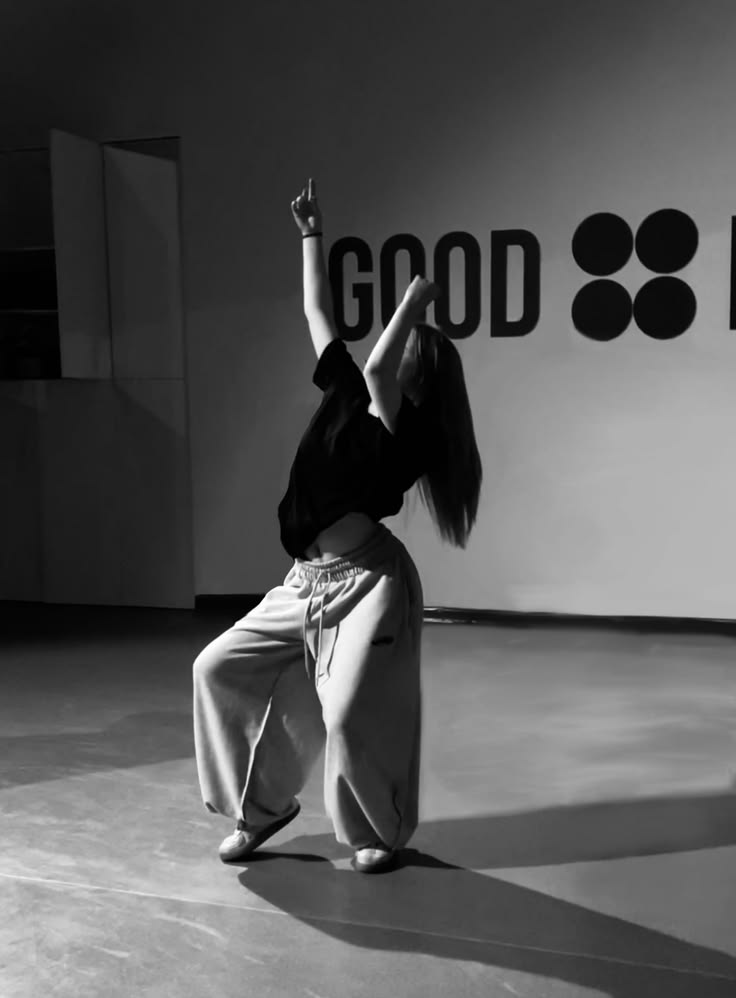

Hobbies
From analytical projects to expressive movement, these activities define my daily routine.

Reading
I am an avid reader who enjoys exploring new ideas and perspectives. Reading helps me sharpen my focus and provides a constant source of inspiration for my creative and academic work.

Podcasts
Listening to podcasts is my favorite way to learn while on the go. I enjoy shows centered on personal development, technology, and storytelling that broaden my understanding of the world.

Excel Mini-Projects
As a BS Office Administration student, I enjoy creating mini-projects in Excel. Designing organized spreadsheets and automating small tasks allows me to apply my technical skills to real-world organization.

Dancing
Dancing is my ultimate form of self-expression and physical activity. It teaches me discipline, coordination, and the importance of rhythm—skills that I carry into my professional life.